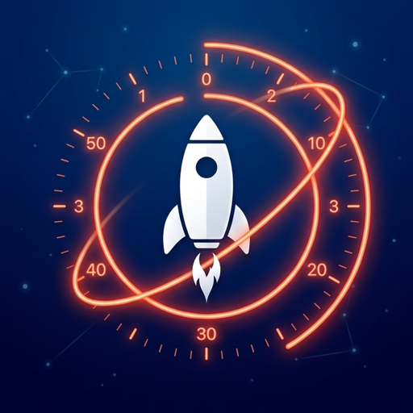
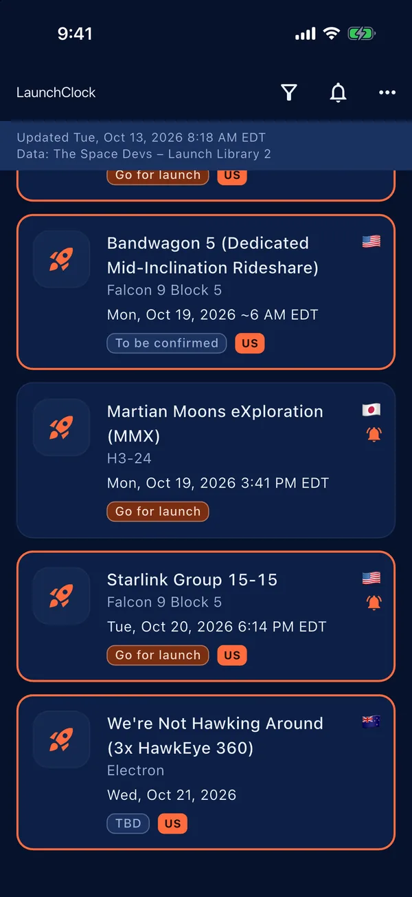
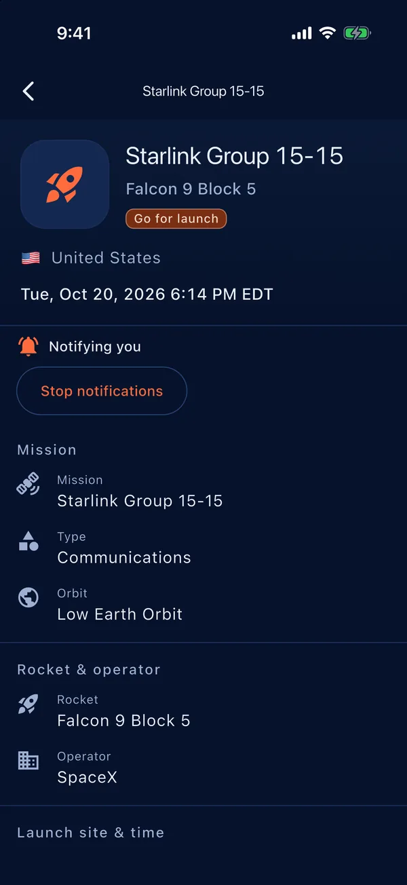
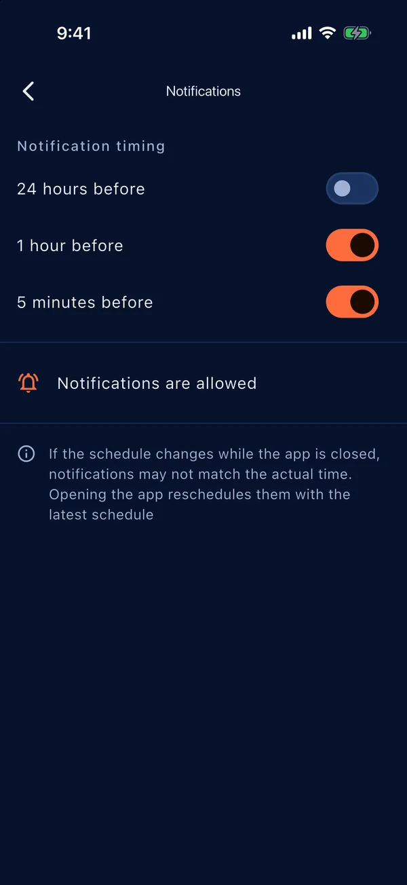
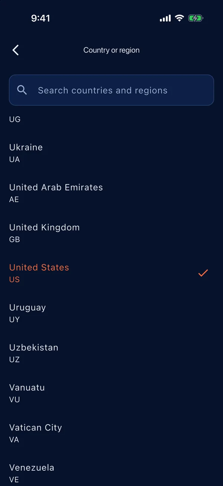

Worldwide, in local time
Browse launches from every country and show the schedule in your own time zone.

LaunchClockRocket launch schedule
LaunchClock lists upcoming rocket launches from around the world and shows each one in your local time. Launches from your own country or region stand out, and you can get a reminder before liftoff.
Browse launches from every country and show the schedule in your own time zone.
Choose your country or region and its launches are highlighted in the list.
Turn on a reminder for a launch and get a notification before it lifts off. The timing is yours to choose.
The app follows your device language in English or Japanese. No ads, no accounts.
The list, launch details, notification settings and country or region picker. Launches shown are the schedule at the time of capture.




Questions, bug reports and feedback are welcome at info@kamkam.me
Notifications are scheduled on your device. On Android, LaunchClock needs the "Alarms & reminders" (exact alarms) permission to deliver reminders on time; without it they may be delayed. Open the device Settings, find LaunchClock under Apps, and allow "Alarms & reminders". Also check that notifications for LaunchClock are allowed and that battery saver is not restricting the app.
Launch times are plans and change often because of weather, technical checks or range schedules. When you open the app it loads the latest schedule and reschedules your reminders to match. Open the app now and then, especially close to a launch you care about.
Launch data comes from The Space Devs (Launch Library 2). The app's data feed is refreshed about every 15 minutes, and the app fetches it when you open it. Accuracy is not guaranteed.
None. See the Privacy Policy.
Launch data is provided by The Space Devs / Launch Library 2. Its accuracy is not guaranteed, and schedules can change at any time. Country names come from Unicode CLDR. LaunchClock is not affiliated with The Space Devs or any space agency or launch provider.